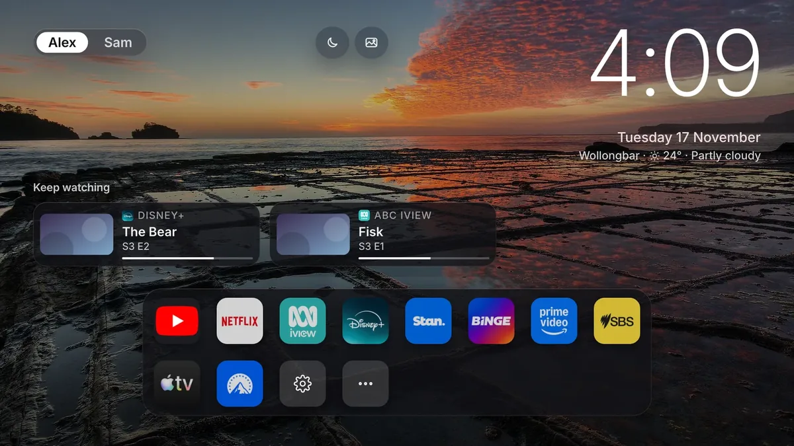

Link to this account?
Linking sends this TV's model, speed and installed app names to your account.
Put Couch TV
on your TV
Have a Couch TV account? Link it, and your design and home details go on the TV too.
No code?
More
Which TVs work with this app
- Google TV. Android 12 or newer uses Wireless debugging and a code. Android 11 uses USB debugging over Wi-Fi, no cable.
- Android TV 7.1 or newer, with Wireless debugging, or a TV that asks "Allow USB debugging?" over Wi-Fi.
- Fire TV on Fire OS. Amazon's home flashes up for a moment before Couch TV comes back.
- TVs that need the Couch TV Helper, a small app on this computer. Setup finds them and offers it.
- Some TVs cannot install apps this way. Setup tells you, and nothing on the TV is changed.
Plug a Google TV box into any TV to get everything. This computer is only needed today. Nothing is deleted from the TV. Nothing about you is sent anywhere.

Which TV is yours?
Looking on your Wi-Fi…
We cannot see a TV yet
- Check the TV is switched on.
- Check it is on the same Wi-Fi as this computer.
- Wait a minute, then press Look again.
My TV isn't here
Try these, then look again.
- Switch the TV on and wait a minute.
- Put this computer on the same Wi-Fi as the TV.
- Avoid guest Wi-Fi. It keeps devices apart.
If the Mac asked to find devices on your local network, press Allow.
You can switch it on in System Settings, Privacy and Security, Local Network.
If Windows asked about networks, press Allow.
If a firewall is on, allow this app on your home network.
With ufw, run sudo ufw allow 5353/udp.
Type the TV's address
Find the address in the TV's network settings.
Where is the address?
- Google TV: Settings, Network and Internet, then your Wi-Fi.
- Android TV: Settings, Network.
- Fire TV: Settings, My Fire TV, About, Network.
- Look for the IP address.
A Fire TV shows up only after ADB debugging is on. Type its address here.
This TV needs another way
What kind of TV is it?
Not sure? On the TV open Settings, then System, About (or Device Preferences, About) and look for "Android TV OS" or "Google TV". Fire TV says Fire OS under Settings, My Fire TV, About.
Switch on Developer options
This lets this computer make the changes on the TV. With the TV remote:
- Open Settings, System, About. On some TVs it is Settings, Device Preferences, About: use whichever your TV shows. Press OK on Android TV OS build (or Build) seven times, until it says you are a developer. Press Back.
- Open Developer options. It is in the same menu: System, Developer options or Device Preferences, Developer options.
- Look down the list. Which of these does it have?
Careful: in that list, Revoke USB debugging authorisations sits near these switches. Do not press OK on it unless this app asks you to. Check what is highlighted before each OK.
Switch on Wireless debugging
- In Developer options, go down to Wireless debugging, open it and switch it on. If it asks "Allow wireless debugging on this network?", tick Always allow and choose Allow.
- Choose Pair device with pairing code. Leave that screen open.
The TV must be on Wi-Fi, not a cable: Android only allows Wireless debugging on Wi-Fi.
One more number
Paired. Now go back one screen on the TV, to Wireless debugging, and type the port shown under IP address & Port (the numbers after the colon). It is a different port from the pairing one.
Switch on debugging
This lets this computer make the changes on the TV. With the TV remote:
- Open Settings, Device Preferences, About. On some TVs it is Settings, System, About: use whichever your TV shows. Press OK on Build (or Android TV OS build) seven times, until it says you are a developer. Press Back.
- Open Developer options, in the same menu: Device Preferences, Developer options or System, Developer options.
- If you see Wireless debugging, go back and choose Google TV instead: that way is easier.
- Switch on USB debugging. If there is also a Network debugging switch, switch that on too. No cable is needed.
- In Developer options, switch on USB debugging. If there is also a Network debugging switch, switch that on too.
- No cable is needed: on these TVs, USB debugging also lets a computer on the same Wi-Fi ask to come in. The TV then asks you on screen.
- Open Settings (the gear at the right of the top row), then My Fire TV.
- If you see Developer options, skip to step 4.
- Open About and press select on your stick's name seven times. "You are now a developer" shows. Press Back.
- Open Developer options and switch ADB debugging on. Say OK to the warning.
On a Fire TV, Amazon's home still flashes up for a moment before Couch TV comes back. That is as good as Fire OS allows.
Look at your TV
Tick Always allow from this computer, then press Allow.
The TV did not ask yet
"Allow USB debugging?" can hide behind an app. Press Home on the TV remote so the TV shows its home screen, and wait 10 seconds.
Then press Try again here and watch the TV.
Switch it off and on again
On the TV, open Settings, System, Developer options (on some TVs Settings, Device Preferences, Developer options). Switch USB debugging off, then on again. If there is a Network debugging switch, make sure it is on too.
On the Fire TV, open Settings, My Fire TV, Developer options. Switch ADB debugging off, then on again.
Go back to the TV's home screen, then press Try again here and watch the TV.
Clear the computers the TV remembers
In the same menu, Developer options, choose Revoke USB debugging authorisations and press OK.
This only helps because this computer has never been allowed on this TV. It makes every other computer that was allowed before ask again the next time it connects (for example a computer that runs Couch TV for you): someone presses Allow once more for it.
Go back to the TV's home screen, then press Try again here and watch the TV.
Restart the TV
Hold the Power button on the remote until the TV restarts. If it only goes to sleep, unplug the TV at the wall for 10 seconds and plug it back in.
On the Fire TV, open Settings, My Fire TV, Restart.
When it is back on its home screen, open Developer options again and check USB debugging is still on. Switch it on again if it went off.
When it is back, open Settings, My Fire TV, Developer options and check ADB debugging is still on.
Then press Try again here and watch the TV.
Use your phone instead
This TV will not let a computer in over Wi-Fi. You can still put Couch TV on it with just your phone. Nothing was changed on the TV.
- On the TV, open Apps, then Search for apps. Type Downloader, pick Downloader by AFTVnews (the first result) and install it.
- On the Fire TV, open Find (the magnifying glass), type Downloader, pick Downloader by AFTVnews and press Get.
- Open Downloader. It may open on a news website with adverts: that is Downloader's own start page, ignore it. Press Back until the bar at the top is highlighted, go right to the # button and press OK. Type 8180170 and press Load (some versions say Go).
- The TV may say it is not allowed to install unknown apps from this source, with CANCEL and SETTINGS. Go right to SETTINGS (not CANCEL) and press OK. A list of apps opens with a warning that you are responsible for what you install: that is normal. Find Downloader, switch it on and press Back. If Downloader closes, open it and type the code again.
- Press Install. When it is done, press Open. That is the Couch TV app, Couch TV.
- If Google Play Protect says App blocked to protect your device: Play Protect checks apps that do not come from the Play Store, and it blocks Couch TV because Couch TV asks for strong permissions (it becomes your home screen and lets your phone work the TV). If the box has More details, open it and choose Install anyway. If it only has OK, this TV will not install Couch TV until Play Protect's app scan is paused: in the Play Store app on the TV, open your profile picture (or Settings), then Play Protect, and switch off Scan apps with Play Protect. Install again, then switch the scan back on. If you would rather not, press Try the computer once more below.
- Couch TV shows an address and a code on the TV. On your phone, on the same Wi-Fi, open that address and type the code. Your phone is now the remote, and it sets up the rest from there.
Let this app find the TV
If Couch TV Setup is not in that list, close setup, open the app again and press Allow when the Mac asks to find devices on your local network.
Ready to set up your TV
We will put Couch TV on it and make it the home screen.
What will change
- Installs Couch TV and makes it your home screen.
- Keeps Couch TV in front when the TV home appears.
- Keeps your apps, logins and settings. Nothing is deleted.
- You can take it off again any time.
Every step, in detail
TCL: after setting up, open the TV's Settings, Accessibility and check both Couch TV services are switched on. On TCL TVs that keeps Couch TV as the home after a restart.
Setting it up
Keep the TV on. We will tell you when it is done.
Starting…
Couch TV is on your TV
What was done
Sign in to link this TV
No code?
TVs set up in this session
Phone remote
On your phone, on the same Wi-Fi, open and type the 6 numbers the TV shows.
Then add the page to the phone's home screen.
To let the phone press keys and type, open on the phone and follow the steps there.
On an up to date Fire TV, Amazon blocks the phone remote from pressing keys and typing. Opening apps and finding shows still work.
Health report
You see all of it before anything is sent.
Couch TV's own details only: versions, free space, memory, its last crash and its own log lines. Addresses and e-mails are blanked out.
Switch debugging off
Couch TV does not need debugging any more. Switching it off is safest.
Couch TV is on your TV.
It works on its own. You can stop here.
Done
Close this app. Delete it if you like.
The TV needs no computer.
Add extra features
Keep the Couch TV Helper in your menu bartraytray.
- Turn the TV on from your phone
- Ask AI on your home computer
- Picks made for you
Computer off? Your home keeps working. Only these extras pause.
You can add them any time, from Couch TV Setup or your account.
To take Couch TV off again, open this app and choose Take Couch TV off a TV.
Couch TV Helper is on.
Look for it in your menu bar.
Open Couch TV Studio, pause it or turn it off from there. The TV stays as it is.
Your TV needs the helper.
It opens Couch TV and runs your phone remote.
What the helper does
- Opens Couch TV when the TV comes on
- Runs the phone remote and "put on Bluey"
- Brings weather, people and Keep watching
Computer off?
Couch TV stays on the TV. Open it from the app row.
It will not open itself, and the phone remote stops.
Take Couch TV off this TV
This puts the TV's own home back and removes the Couch TV apps. Your other apps, logins and settings stay as they are.
If a computer at home runs Couch TV for you (the bridge), stop it first, or it switches things back: see docs/UNINSTALL.md on GitHub.
Done
Couch TV is off this TV. Press Home on the remote: you should see the TV's own home.
Want Developer options gone too? On the TV: Developer options, switch the switch at the top off.
Setup has stopped
You can close this tab.